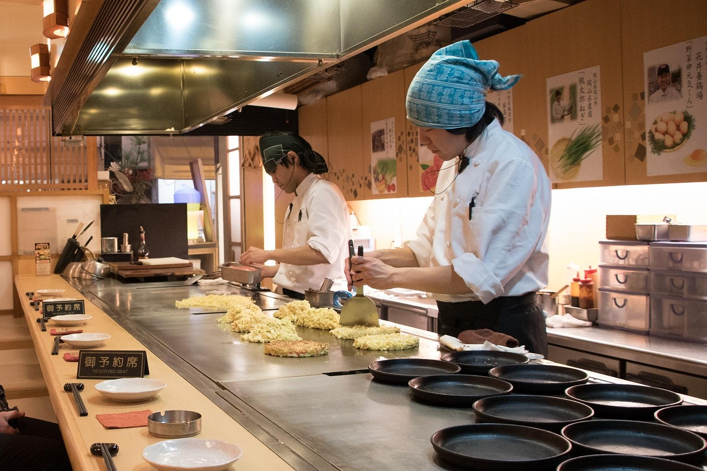
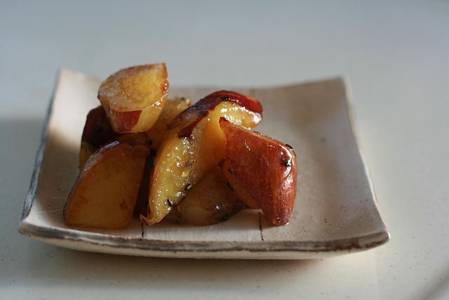

➽ Listen to the Japanese sounds of Jikan Wa Mikata Da:
Osaka is a vibrant parade of scents, colors, and stories that winds its
way through the streets. On a single stroll through Dotonbori, the shop
windows seem to come alive: neon signs, the laughter of waiters, the
sound of sizzling fryers. Here's a mini-travelogue about three iconic
dishes that you absolutely have to try.
Okonomiyaki: The city's master of the griddle In Osaka,
Okonomiyaki is not just a dish, but an art form.

Often, a hot plate sits by the roadside, on which a large, round dough
base is prepared: flour, egg, finely chopped cabbage, water, sometimes
small shrimp or bacon. The cook mixes everything right in front of you,
pours a flat disc onto the hot plate, and uses a spatula to form layers.
Once the base is crispy, a special sauce is brushed over it — sweet and
salty, smoky — followed by mayonnaise in thin stripes, dried bonito
flakes, pickled vegetables, and a sprinkle of aonori (dried seaweed
powder). When you take the first bite, you notice the sweet depth of the
cabbage, the tender texture of the dough, and the creamy, tangy note of
the sauce. It is like a harmonious conversation between familiarity and
surprise.
Takoyaki: Little clouds from the sea
Takoyaki are round delicacies, small, golden brown, and hot in your
hand. Formed in a special griddle, soft batter balls are filled with
cubes of octopus (tako), green onions, tempura scraps (tenkasu), and
ginger. While they sizzle, the balls are turned with a spatula until a
crispy crust forms on the outside. Once ready, they are placed in a
cardboard tray, sprinkled with bonito flakes and lightly coated with
Takoyaki sauce, mayonnaise, more bonito, and chopped aonori seaweed. The
octopus inside is tender, the batter outside is crispy – a delightful
interplay of heat, texture, and savory flavors. As you put the first
Takoyaki in your mouth, the inner core almost melts on your tongue,
accompanied by a subtle hint of Japanese scallion.
Yaki Imo: Autumn feelings on a skewer

Yaki Imo, baked sweet potatoes, are often sold directly
from large wooden bowls resting in hot pits. The vendors cut open the
crispy skin, place the warm potato in a paper bag, and sprinkle it with
a little coarse salt. The sweetness of the potato, caramelized by the
roasting, is reminiscent of autumn evenings by the river. The first
scent unfolds a sweet, almost nutty note as you break apart the
steaming, soft texture. Sometimes it's enhanced with a light dusting of
butter or even a pinch of sugar, but the true charm lies in its
simplicity: the cracking of the skin, the warm steam, the cozy feeling
of eating slowly while the street bustles around you. Osaka combines
tradition with dynamism – and street food is the perfect reflection of
this energy. As you walk through Dotonbori, let yourself be carried
away: the smell of sauces, the sizzling of the pans, the bright glow of
the neon signs – and you'll understand why Osaka is considered the
"culinary capital of Japan."